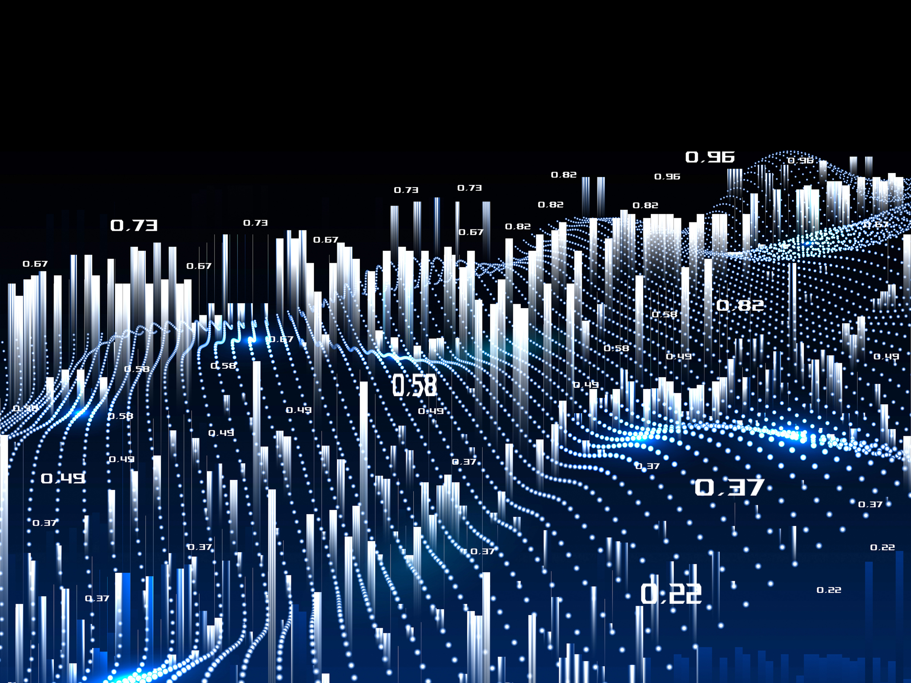

80%+ prediction accuracy
Proprietary deep-learning models lift mineral targeting far above conventional methods — turning probability into precision.
GeoMiner.AI connects raw subsurface data to maps, models, and forecasts — an end-to-end AI engine that ingests every major geodata format and delivers high-confidence targets in near-real time.
From the first ingested file to the final exported target, intelligence runs end to end.
Proprietary deep-learning models lift mineral targeting far above conventional methods — turning probability into precision.
Interpret SEG-Y lines and cubes as they stream in — fault and fracture mapping with no manual pre-processing and no waiting.
Interactive heatmaps, 3D models, and confidence-scored targets — visualized in a unified workspace and ready to export.
Data Ingestion → AI Processing → Visualization & Export.
SEG-Y seismic lines and cubes, LAS well logs and LiDAR, GeoTIFF satellite imagery, shapefiles, drone point clouds and more. The platform automatically normalizes and merges every input.
Seismic fault and fracture mapping (3D CNN + RNN), terrain and lithology segmentation (UNet CNN), LiDAR surface reconstruction (PointNet++), and mineralization targeting via transformer ensembles.
Results appear as interactive heatmaps, 3D models, fault overlays, and confidence-scored targets. Export to ArcGIS or QGIS (GeoJSON, Shapefiles) or work directly in our web dashboard.
SEG-Y, LAS, and GeoTIFF are each industry-standard formats for seismic, LiDAR/well-log, and geospatial imaging data. GeoMiner.AI processes them all seamlessly — where typical tools handle only one or two, forcing costly conversions and manual linking.



See how GeoMiner.AI integrates with your existing systems and starts producing high-confidence geological insights immediately. Book a demo and find resources faster.